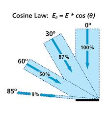

About Me
About Baidu EFE
Agenda
- 前端的可视化手段
- 数据场的可视化
标量场和向量场
- 线数据的可视化
迁徙，航班路线
- 网络数据的可视化
社交关系，依赖关系
前端的可视化手段
可视化库
- Processing
- D3.js
-
ECharts
ECharts-X, 图说
- Highcharts
- ...
图形接口
- SVG
- Canvas
- WebGL
可视化示例图
二维标量场的可视化
标量场（Scalar Field）
- 物理空间
- 地理空间
- 屏幕空间
- …
- 温度, 湿度
- 高度
- 分布密度
- 点击数
- …
- 大小
- 颜色
- 高度
- …
Canvas
- 路径图形(方块，圆)
数据稀疏
有形状，大小的属性
缺点：开销大
-
像素操作
数据量大的均匀网格
快
缺点：能表达的只有颜色
WebGL
-
点云（Point Cloud）
颜色
纹理
- 写入纹理
- 三维图形
微博签到分布 - Canvas
ctx.fillStyle = color; ctx.beginPath(); ctx.rect(i, j, 1, 1); ctx.fill();
微博签到分布 - WebGL
gl.drawArrays(gl.POINTS, 0, vertexCount);
Vertex Shader
attribute float size; ... gl_PointSize = size; ...
Fragment Shader
gl_FragColor = color * texture2D(sprite, gl_PointCoord);
全国 GDP 网格分布
pixels[i] = value; pixels[i + 1] = value; pixels[i + 2] = value;

value = value * Math.pow(2, exposure);
后处理 - 曝光调整

颜色映射 - 一维颜色查找表
页面点击热力图
高度 - 三维直方图
明暗面 - Lambert Shading
全球人口分布 - ECharts
二维向量场的可视化
向量场（Vector Field）
- 图形表示向量大小和方向
- 纹理流线
- 粒子模拟